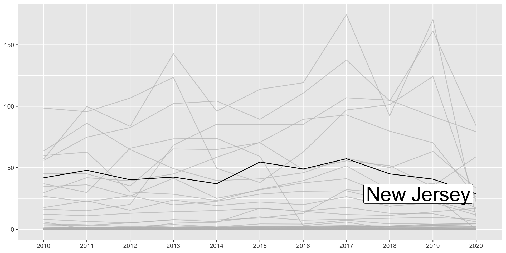
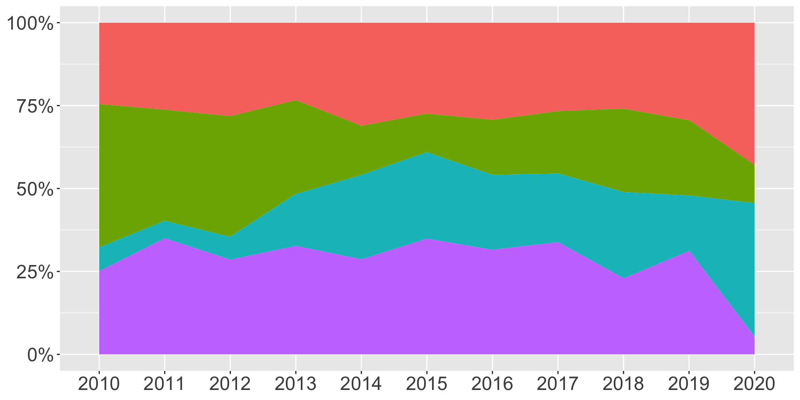
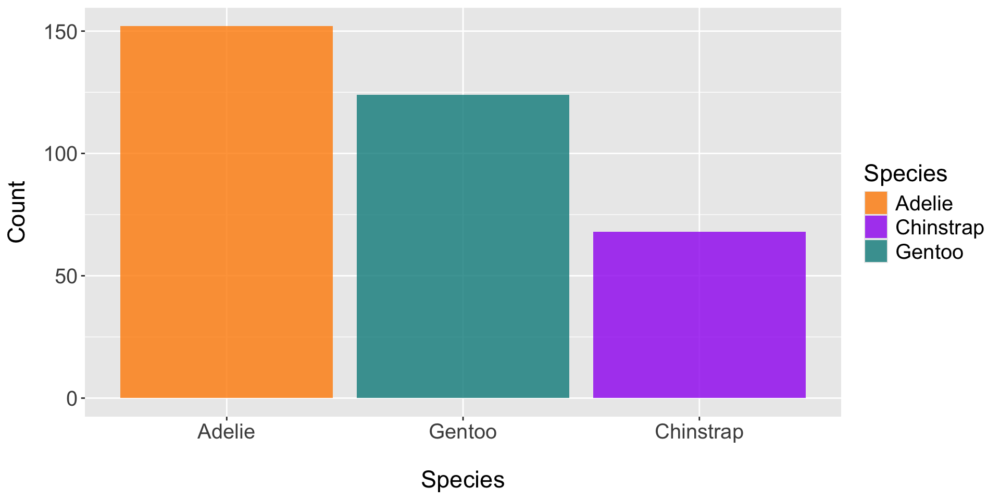
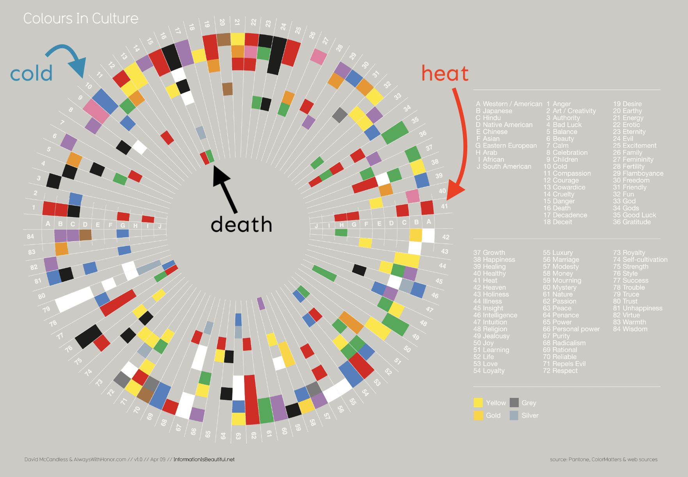
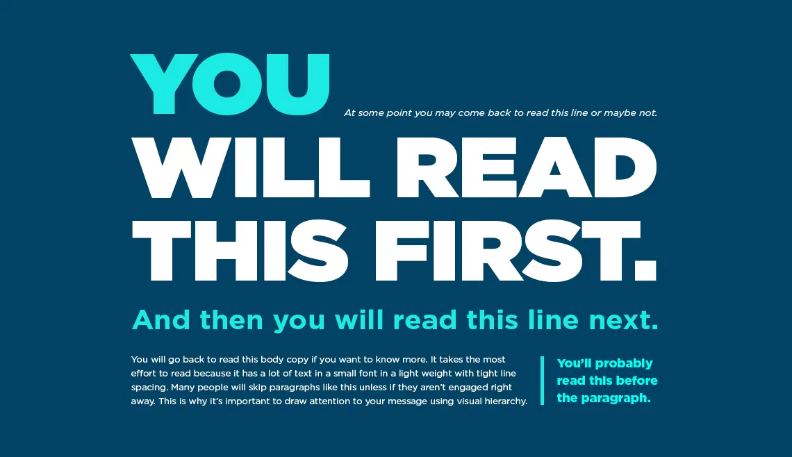

Lascaux Cave Paintings. Image source: Rock Art Blog

“any graphical representation of information and data” (Cédric Scherer) & “part art and part science” (Claus O. Wilke)
There’s a long history of people (across time, regions, cultures) using visual representations of data to communicate information.
Lascaux Cave Paintings. Image source: Rock Art Blog

Florence Nightingale. Image source: Cool Infographics

W.E.B. DuBois. Image source: Smithsonian Magazine
a layered “grammar of graphics” i.e. compose graphs by combining independent components
Graphic layers: data (tidy format), geoms, statistical transformations, position adjustments, coordinate system, facets
Communication layers: labels, annotations, scales, themes, layout
lots of extensions + an active / helpful online community

alt=“Colored stripes of chronologically ordered temperatures where they increase in red to show the warming global temperature”
“If I had the answer to that, I’d be rich by now…I have no idea, but I can give you some clues to make your own choices based on what we know about why and how visualization works”
-Albert Cairo

(Plus, sticking with just the graphic forms from the hierarchy would get pretty boring!)

highlighting groups of interest (e.g. {gghighlight})

formatting axis labels using {scales}

direct labeling & arranging components

marginal density plots using {ggExtra}


Source: US Drought Monitor

Our recreation!
Maximizing the data-ink ratio (without sacrificing readability and aesthetics) and reducing eye movement (removing redundant info, moving legends, using direct labels, avoiding rotated text).


Information overload

3D plots

Pie charts

Dual axes

From encoding information, to eliciting emotion, it’s critical that we choose our colors purposefully. Some topics we covered:
scale types & when to use which (quantitative vs qualitative; sequential vs. diverging, classed vs. unclassed)
colorblind-friendly palette choices (plus tools for checking)
redundant mapping (e.g. colors + shapes / patterns)
widely-used and recognizable climate science palettes (which you should totally use, when applicable!)
a little bit of color theory to help guide us in designing our own palettes
how colors can (and do) elicit emotions (which can differ across cultures)
general guidelines


Tools:
{viridis} & {RColorBrewer} (great options for colorblind-friendly palettes)
{paletteer} and the R Color Palettes website
Chrome extensions for simulating vision deficiencies & gray scale
Online palette generators
{ggplot2} color scaling functions
Tips:
save palettes as vectors outside of your plot
set color names

Unclassed map

Classed map:

We also touched on simple features and accessing shapefiles using {tigris}.




We discussed incorporating equity awareness as we work with data, how connecting readers with content requires empathy, considering how we (dis)aggregate data, awareness of “othering,” and data humanism.
Building inputs that update data viz outputs in an Observable Notebook is pretty sleek

D3 is complex, but opens up limitless data viz possibilities!

Artwork by Allison Horst